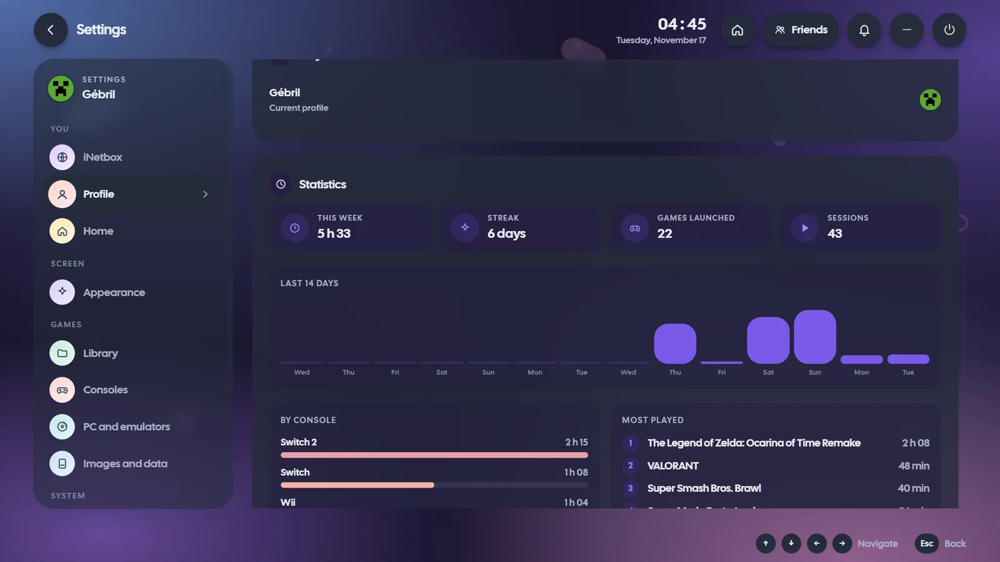

Consoles and PC together on a 3D shelf, with their real covers. iBox installs your emulators, tunes each game for your PC and lets you play together, even remotely.
Download iBox
Add your folders: iBox finds your games, their covers and their manuals, then launches them with the right emulator and the right settings.
Every console has its real cases. Open them, turn them over to read the back, just like in a store.
Emulators and PC stores (Steam, Epic, GOG, EA, Ubisoft, Xbox, Riot) in one place, with a controller.
Emulators install in one click from their official sources; iBox tells you when a new version is out.
Emulator settings tailored to your PC and to each game, with backup and one-click undo.
Invite friends into your game, up to six players, straight from PC to PC: picture, sound and their controllers.
Every case holds its booklet: the game's real manual, to leaf through page by page.
A trophy room for RetroAchievements and Steam, with achievements announced while you play.
Your friends and what they are playing live, messages, invites and the Community.
Sort your games your way, track your play time, pick your theme and wallpaper.

Front, spine, back and disc art are fetched automatically, or picked by you. Open the case: the disc and the booklet are right where they belong.

Pick a console: iBox Platforms downloads the recommended emulator from its official source, checks the file and installs it. iBox never provides games, BIOS files or keys.



From the NES to the Switch 2, plus all your PC games.
No administrator rights needed, in a few seconds. Updates then arrive on their own.
Profile, game folders, emulators, PC stores: the setup assistant explains everything.
Pick a game on the shelf, iBox takes care of the rest.
On first launch, Windows may show “Windows protected your PC”, because iBox is still a young app. Click More info, then Run anyway.
iBox provides no games, BIOS files or keys: use your own legally owned copies. Emulators come from their official sources. iBox is not affiliated with any manufacturer; the trademarks mentioned belong to their owners.